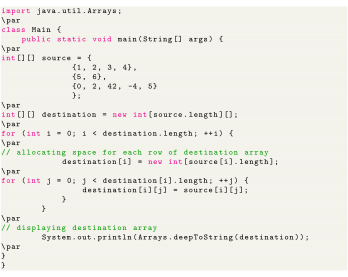

Next: Copying 2d Arrays using Up: Java Arrays Previous: Copying Arrays Using copyOfRange() Contents
Similar to the single-dimensional array, we can also copy the 2-dimensional array using the for loop. For example,

Output for the above code is as follows

In the above program, notice the line,
Here, the deepToString() method is used to provide a better representation of the 2-dimensional array.